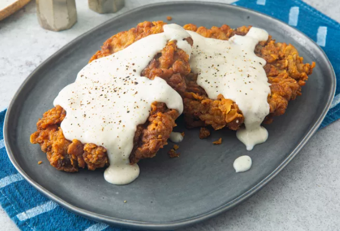

Fried chicken

A Southern favorite, these crispy, breaded, tenderized cube
steaks drenched in creamy gravy can be served for breakfast or dinner.
Ingredients:
- 4 (½ pound) beef cube steaks
- 2 ¼ cups all-purpose flour, divided
- ¾ teaspoon salt
- 1 ½ cups buttermilk
- 1 large egg
- 2 cloves garlic, minced
- 3 cups vegetable shortening for frying
- 4 cups milk
Recipe:
- Place steaks between 2 layers of plastic and pound to a thickness of 1/4 inch.
- Place 2 cups flour in a shallow bowl.
- Stir together baking powder, baking soda 1 teaspoon pepper, and 3/4 teaspoon
salt in second shallow bowl. Add buttermilk, Tabasco sauce, egg, and garlic; stir to combine.
- Heat shortening in a deep cast-iron skillet to 325 degrees F (165 degrees C).
Place a wire rack over a sheet of parchment paper.
- While the shortening is heating, dredge a steak in flour to coat; shake off excess.
Dip into buttermilk batter; lift up so excess batter drips back into the bowl. Press
in flour again to coat both sides completely.
Place breaded steak on the wire rack and repeat to bread remaining steaks.
- Fry steaks, in batches if necessary, until evenly golden brown, 3 to 5 minutes per side.
Remove steaks to a paper towel-lined plate to drain. Cover with foil to keep warm
while you make the gravy.
- Drain fat from the skillet, reserving 1/4 cup of the liquid and as much of the solid remnants as possible.
- Return the skillet to medium-low heat; add the reserved oil. Whisk the
remaining 1/4 cup flour into the oil. Scrape the bottom of the pan with a
spatula to release solids into the gravy.
- Stir in milk, increase the heat to medium, and bring the gravy to a simmer.
Cook, stirring often, until thick, 6 to 7 minutes. Season with kosher salt and pepper.
- Transfer steaks to a platter and pour gravy over top.
Return to the homepage